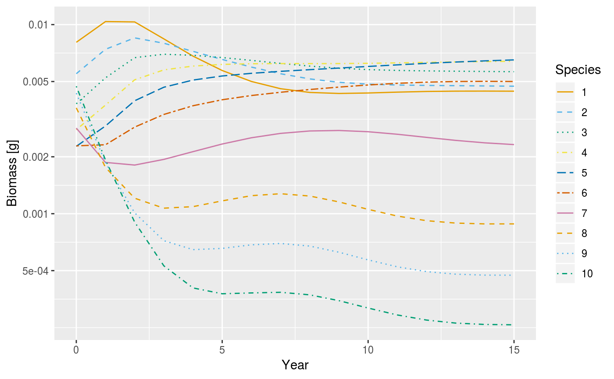
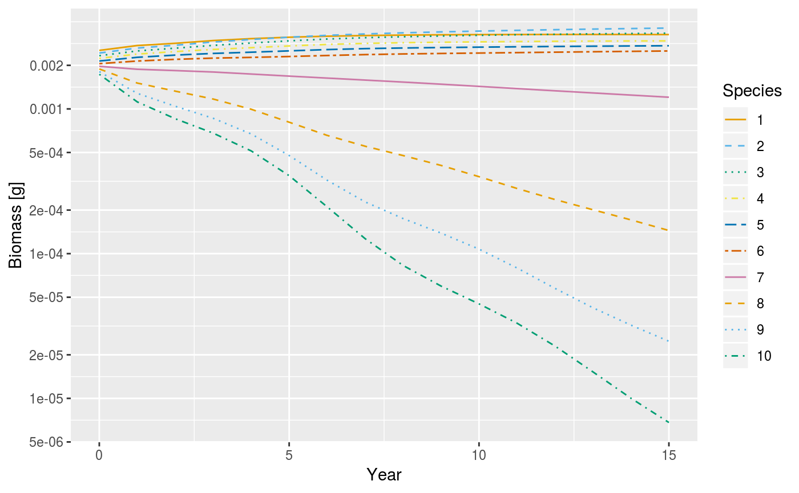

vignettes/scale_invariant_trait_based_model.Rmd
scale_invariant_trait_based_model.RmdConstructing models that allow fish species to coexist is not trivial. This applies as much to size-spectrum models that use the mizer software tool, as it does to other kinds of multispecies models. Current size-spectrum models achieve coexistence by assuming that stock-recruitment relationships are strong enough within species to promote coexistence of the species. They do this by making the controlling parameter \(R_{max.i}\) (described in the section on the stock-recruitment relationship) and keeping recruitment sufficiently low. Although coexistence can be achieved in this way, it can necessitate rather small values of \(R_{max.i}\), with major effects on persistence and stability of species.
Biomass plots following introduction of fishing (1) in the trait-based model, and (2) in the scale-invariant model developed here.
In the plot above there are ten species; \(w_\infty\) is taken over a range 10 g to 1000 g, uniformly spaced on the log-scaled mass axis. The initial state is close to the steady state in the absence of fishing.
Recruitment to the multispecies fishery is knife-edge at 100 g and fishing mortality rate is set at \(F = 1\) yr\(^{-1}\).
This and the next section (i.e., the section on implementing explicit species in a scale-invariant background) provide an alternative way of generating sets of coexisting species, without the need for such strong stock-recruitment relationships. This makes stocks more sensitive to changes in the environment, such as those caused by fishing. To motivate the new approach, the above figure compares it with the trait-based model described in the section on the trait-based model in the presence of a substantial amount of fishing. In the case of the trait-based model, all species persist under fishing. In this instance, the species with largest maximum weight enters the fishery at about half of its weight at maturation, and persists because its stock-recruitment relationship is sufficiently strong to boost its rate of increase when rare. The figure can constructed using the following code:
params_trait <- set_trait_model(no_sp = 10, min_w_inf = 10, max_w_inf = 1e3,
knife_edge_size = 100)
sim_trait_initial <- project(params_trait, t_max=100, effort = 0)
sim_trait <- project(params_trait,
initial_n = sim_trait_initial@n[dim(
sim_trait_initial@n)[1],,],
initial_n_pp = sim_trait_initial@
n_pp[dim(sim_trait_initial@n_pp)[1],], t_max=15,
effort = 1)
plotBiomass(sim_trait)
The approach developed below allows the stock-recruitment relationship to be weakened or completely removed, with the result that species are more sensitive to fishing (see the figure below).
In the example shown, fishing drives the largest and most vulnerable species to extinction (there is no stock-recruitment relationship in this instance).
Some density-dependent feedbacks still remain, but they emerge from the internal dynamics.
params <- set_scaling_model(no_sp = 10, min_w_inf = 10, max_w_inf = 1e3,
min_egg = 1e-4, min_w_mat = 10^(0.4), rfac = Inf,
knife_edge_size = 100,kappa = 0.005)
sim <- project(params, t_max=15, effort = 1)
plotBiomass(sim)
The key for constructing these models is a special power-law relationship between body weight and density, which marine ecosystems are often observed to be near, after aggregating over species. The significance of the power law is that, in its neighbourhood, coexistence of species becomes easier to achieve. In fact, on the exact power-law, it has been proved that an infinite number of species coexist in a unicellular plankton model. Related numerical simulations using finite number of species support the proposition that coexistence of multiple species is easier to achieve near the power law.
These properties readily extend to multicellular fish assemblages.
We build the alternative approach here in two steps. First, this section describes a background spectrum designed to bring the trait-based model (see the section on trait-based models) close to a scale-invariant form (see the section on the steady state solution), for which the steady-state is known analytically. For want of a better term, we call this model the scale-invariant, trait-based model, with the caveat that the model is close to, but not exactly, scale invariant.
Second, in the section on implementing explicit species in a scale-invariant background, these background species are replaced by foreground species with specified properties in a fish assemblage.
Dynamical systems with scale-invariant properties are not standard currency in ecology, and this subsection can be skipped. However the approach is underpinned by scale invariance with respect to body weight, so we briefly introduce some key concepts here. There is little more in this than allometric scalings of ecological rates with respect to body weight, for the most part familiar and widely documented in ecology.
Consider a species with some characteristic weight (maximum weight \(w_\infty\) will do for the purpose), and with a density function \(N(w,t)\) that has dynamics given by the McKendrick–von Foerster equation:
\[\begin{equation} \frac{\partial N(w,t)}{\partial t} + \frac{\partial g(w) N(w,t)}{\partial w} = -\mu(w) N(w,t), \end{equation}\]
Consider a second species with maximum weight \(cw_\infty,\) where \(c\) is a positive rescaling factor. Then the McKendrick–von Foerster equation would be scale-invariant, if the latter species had dynamics the same as the first when rescaled as \(c^{\lambda + 1} N(c w, c^{1-n} t),\) for any \(c>0\). Here \(\lambda\) is the exponent of the plankton spectrum, and \(n\) is the exponent for maximum food intake.
This rather delphic statement basically says that, under scale invariance, knowing the dynamics of one species is enough to know the dynamics of every species. Strictly speaking, it could only apply to the McKendrick–von Foerster equation if there was a continuum of maximum weights, with a species at every \(w_\infty > 0\). Clearly, this cannot be the case in a multispecies spectrum with a finite set of species, because the \(w_\infty\)s are typically separated by finite intervals, and the spectrum has fixed lower and upper boundaries, outside which there are no species. Therefore, a scale-invariant system is, at best, an idealisation of a size-spectrum model with a finite number of species.
There is an ecological reason and a mathematical one. The ecological reason is that, in marine ecosystems, abundance (aggregated over species) as a function of body mass, is often observed to be quite close to a power law. The existence of this remarkable regularity, plus the fact that it promotes coexistence of species, supports the development of scale-invariant models.
The mathematical reason is that scale-invariant systems possess symmetries which make them easier to understand. For instance, the assumption of scale invariance in the system with a continuum of maximum weights allows an exact analytic expression for a steady state of the system to be derived. Although scale invariance cannot be met exactly in the system with a finite number of species, it can still guide the choice of parameter values that are likely to permit coexistence of species.
Note that we are not suggesting that real assemblages of fish species are at rest on an exact power-law. Rather we use scale invariance to construct background assemblages that facilitate coexistence of observed fish species (foreground species), without calling for strong stock-recruitment relationships.
Here we describe how to run the scale-invariant model, and make some comparisons with the trait-based model in the section on the trait-based model.
To help set up a scale invariant trait-based model, there is a wrapper function, set_scaling_model(). Like the set_community_model() and set_tait_model() functions described above, this function can take many arguments. Most of them have default values so you don’t need to worry about them for the moment. Now let us give an example of how to setup the scale-invariant trait-based model:
params <- set_scaling_model(no_sp = 10, min_w_inf = 10, max_w_inf = 1e3,
min_egg = 1e-4, min_w_mat = 10^(0.4),
knife_edge_size = 100, kappa = 0.005)## Note: No gamma provided for some species, so using f0, h, beta, sigma, lambda and kappa to calculate it.The main parameters of interest are the number of the species in the model (no_sp), the minimum egg size (min_egg), the minimum maturity size of a species (min_w_mat) and the minimum and maximum asymptotic sizes (min_w_inf) and (max_w_inf) respectively. The egg, maturity and asymptotic sizes are spread evenly on a logarithmic scale. The Beverton-Holt stock recruitment relationship is turned off by default.
Once a MizerParams object has been created for the scale-invariant model, it can be run in the usual way:
We make a plot of the biomass over time as follows:
A plot of time vs biomass for the scale invariant trait-based model with no fishing.
One can see from the previous figure that the system is initiated very close to a steady state, and it is further attracted to the steady state without the need to impose any stock recruitment relationship (at least under default settings).
We can check that the steady state lies close to a power law by plotting the biomass densities of the different species, as well as their total, which evidently is close to the power law.
A plot of weight vs biomass density for the steady state of the scale invariant trait-based model with no fishing.
The new model is similar to the original trait-based model, but includes some modifications and restrictions to get assemblages that are close to scale invariance. The changes are as follows.
For the model to be scale invariant, the exponent of metabolic intake \(n\) needs to be equal to the exponent \(p\) of metabolic loss.
Scale invariance also requires that the exponent of the plankton spectrum \(\lambda\) must satisfy the relation \(\lambda = 2-n+q\), where \(n\) is the exponent of metabolic intake and \(q\) is the exponent of the volumetric search rate.
Feeding depends on prey body size, but not on prey species identity, so \(\theta_{ij}=1\) for all \(i,j\). Note however that the feeding preference function \(\phi_i(w_p/w)\) already has scale invariance built into it, because predation depends on the ratio of prey to predator weight. Thus no modification to growth and mortality caused by predation is needed in moving to scale invariance.
We assume that the proportion of energy allocated to reproduction \(\psi_i(w)\) is given by the step-like function \[\begin{equation} \psi_i(w)=\begin{cases} 0 & \text{if } w<w_{m.i}\\ \left(\frac{w}{w_{\infty.i}}\right)^{1-n} & \text{otherwise} \end{cases} \end{equation}\] This can be achieved by taking the default equation described in the section on investment into reproduction, and replacing the number 10 within with \(\infty.\) This is not a requirement for scale invariance; the assumption was made for the mathematical reason that it is then possible to get a closed-form expression for the steady state.
Scale invariance requires egg weight to be a fixed fraction of maximum weight. It is therefore indexed by species \(w_{0,i}\), rather than taking a single size \(w_0\). Egg size does vary over about two orders of magnitude in teleosts, but there is evidence that at least the larger teleosts are unusual in marine systems in lacking a scaling relationship between egg wight and adult weight. Scale invariance of egg weight should therefore be seen as a mathematical restriction required to generate the scale-invariant background assemblage, in so far as the background comprises teleost fish.
A stock-recruitment relationship is not required to create a steady state in the scale-invariant, trait-based model.
However, a stock-recruitment relationship can be included in the scale-invariant trait-based model by setting the value of r_fac. Here r_fac equals the maximum recruitment \(R_{max.i}\) divided by the actual recruitment \(R_i\) at our steady state. By default the stock-recruitment relationship is turned off, by setting r_fac to go to infinity. This has the effect of also making \(R_{max.i}\rightarrow \infty\), and so the typically assumed Beverton-Holt stock-recruitment equation $ R_i = R_{.i} $ is effectively replaced with the simple equation \(R_i = R_{p.i}.\)
Beyond the upper limit of body weight. The total mortality needs to scale with body weight. In practice, body weight always has an upper limit in a real ecosystem, and predation mortality goes to zero as this limit is approached. Some compensation is needed for this in the background mortality. Thus, rather than determining the background mortality using the equation
\(\mu_{b.i} = \mu_0 W_i^{n-1},\) we instead use the more intricate expression: \(\mu_{b.i}(w) = \max \{ \mu_0 w^{n-1} - \mu_{p.i}(w),0 \}.\) Essentially this term represents the predation mortality which would be induced by predators beyond the upper limit of body sizes explicitly modelled, under the assumption that the abundance of such predators continue the scale invariant pattern. mortality, given by $ _{p.i}(w_p) = j {ji} _j(w_p/w) (1-f_j(w)) _j w^q N_j(w) , dw$, where the abundance \(N\) is the abundance at our steady state. This is done to ensure that the total mortality rate on explicitly modeled species is \(\mu_0 w^{n-1}\) which scales with weight in the way required for scale invariance.
The plankton spectrum extends from the smallest weight at which an explicitly modeled fish may eat. We define the carrying capacity \(c_p(w)\) of the plankton so when our system is at steady state, the combination of the plankton spectrum and the aggregate abundance of the explicitly modeled species is the power law \(\kappa w^{-\lambda}.\) An expression for how we set \(c_p(w)\) within the scale-invariant trait-based model is given by the equation \[\begin{equation} c_{p} (w)= \min \left\{ \left(1+\frac{\mu_p(w)}{r_0 w^{p-1}} \right)\left( \kappa w^{-\lambda} - \sum_i N_i(w) \right),0\right\}, \end{equation}\] or is equal to the power law \(\kappa w^{-\lambda}\) within the appropriate size range (i.e., for \(w\leq\min\{w_{m.i}\}\)), \(w\) approaches \(\min\{w_{m.i}\}\) from below, the carrying capacity of the plankton declines to zero.
By default the scale-invariant trait-based model is initialized at a steady state, see the section on the steady state solution, (provided no fishing is being performed), whereas the original trait based model is not initialized near its steady state.
We have seen that using strong stock recruitment relationships, as implemented within the models discussed in the section on the trait-based model and the section on the North Sea model can lead to scenarios where the stock levels are unrealistically insensitive to changes in the environment. In order to fix this issue we want to create a model where species of interest can co-exist and interact without imposing a strong stock recruitment relationship. The key to our approach is to use species from the scale-invariant trait based model as a type of background or substrate, into which the heterogeneous species of specific interest (the foreground species) can added.
We begin with only the scale-invariant background, which is setup close to a steady state by the set_scaling_model() command. We add new species using the addSpecies() command, in such a way that the resulting system remains close to a steady state. To achieve this we lower the abundances of the background species in our candidate steady state to compensate for the addition of the new foreground species, so that the background species still have the same food levels, and growth rates, as they did in the original system. We also choose the abundance curve for the newly added species so that it will be time-invariant under the McKendrick–von Foerster equation. Additional steps are taken to fine tune the resulting state to make sure that the background species are close to time-invariant under the McKendrick–von Foerster equation, and that the quantity of fish growing up from the egg size is balanced by the rate of egg production.
Initially, when we start with the scale-invariant trait-based model, these species are organized, so that their aggregate abundance follows a power-law. This can be done using the set_scaling_model() command as follows:
params_bg <- setBackground(
set_scaling_model(no_sp = 10, no_w = 400,
min_w_inf = 10, max_w_inf = 1e5,
min_egg = 1e-4, min_w_mat = 10^(0.4),
knife_edge_size = Inf, kappa = 10000,
lambda = 2.08, f0 = 0.6, h = 34)
)## Note: No gamma provided for some species, so using f0, h, beta, sigma, lambda and kappa to calculate it.## Note: Negative plankton abundances## Note: Negative plankton abundance values overwritten with zeros## Note: Negative background mortality rates overwritten with zerosLet us introduce a species which we are interested in modelling explicitly into this background using our addSpecies() command. For the sake of example we shall introduce a red mullet, we start by specifying its parameters using a dataframe with a single row:
species_params <- data.frame(
species = "Mullet",
w_min = 0.001,
w_inf = 173.2425,
w_mat = 15.14863,
beta = 283,
sigma = 1.8,
z0 = 0,
alpha = 0.6,
erepro = 0.1,
sel_func = "sigmoid_length",
gear = "sigmoid_gear",
l25 = 13.17291,
l50 = 15.48,
k = 0,
k_vb = 0.6,
a = 0.0085,
b = 3.11,
gamma = 0.0017,
h = 50,
linecolour = "red",
linetype = "solid"
)Foreground species of specific interest can be introduced into our background using the following command:
## Note: The following species have feeding kernels that extend below the smallest plankton size specified by min_w_pp: MulletThis code creates a new MizerParams object containing the original background species and the new foreground species, mullet. The addSpecies() command attempts to construct a new approximate steady state (params_out@initial_n) including the new species.
The stock recruitment relationship can be controlled by setting the value of r_fac, as described in the section about changes to the trait-based model.
We can perform a simulation with our new system, including the mullet, in the usual way:
We can see from the resulting plot of time vs biomass that the system is initiated close to a steady state:
Example plot of time vs biomass for the scale invariant trait-based model plus mullet.
We can also visualize the relative abundances of the different species with the following command:
Example plot of weight vs abundance for the scale invariant trait-based model plus mullet, in the final state of our simulation.
In practical fisheries science one will have several species that one wishes to model explicitly. Further foreground species can be added into our system by repeated use of the addSpecies() command. Let us demonstrate this by adding hake into our system with background and mullet. We start by specifying the data for the hake:
species_params <- data.frame(
species = "Hake",
w_min = 0.001,
w_inf = 4174.194,
w_mat = 183.5169,
beta = 11.02318,
sigma = 1.1,
z0 = 0,
alpha = 0.6,
erepro = 0.1,
sel_func = "sigmoid_length",
gear = "sigmoid_gear",
l25 = 16.09244,
l50 = 16.6,
k = 0,
k_vb = 0.1,
a = 0.0046,
b = 3.12,
gamma = 0.003,
h = 20,
linecolour = "blue",
linetype = "solid"
)Now we add the hake into our system:
## Note: The following species have feeding kernels that extend below the smallest plankton size specified by min_w_pp: MulletWe visualize the initial condition, close to steady state using the following command:
A plot of weight vs biomass density for the near steady state created by adding mullet and hake to a scale-invariant background.
To see that this is close to a steady state we shall evolve the system and show how biomass changes over time:
A plot of time vs biomass showing our system with background species, mullet and hake, evolving to a nearby steady state.
The steady() command can be used to fine tune the initial condition to be very close to a steady state:
## Steady state was reached after 12 years.This results in a a configuration very close to a steady state, as we can see by evolving the system and plotting how biomass changes over time:
A plot of time vs biomass showing our system with background species, mullet and hake evolving from our fine tuned nearby steady state.
In this section we give some of the more technical details behind the scale-invariant model, and how it is implemented in mizer.
Assuming scale invariance allows us to find the following exact analytic expression for a steady state. This corresponds to the following form for the abundance within the discrete approximation to the scale-invariant system implemented by mizer: \[\begin{equation} % {#eq:steady} N_i (w,t) = H \left(\frac{w_{0,1}}{w_{0,i}}\right)^{\lambda} \left(\frac{w_{0,i}}{w}\right)^{\mu _0/\hbar} \hbar^{-1} w^{-n} M_i (w) \end{equation}\] where \[\begin{equation} M_i (w)= \begin{cases} 1, & \text{if}\ w<w_{m.i} \\ \frac{1}{\left(1-\left(\frac{w}{w_{\infty.i}}\right)^{1-n}\right)}\left(\frac{1-\left(\frac{w}{w_{\infty.i}}\right)^{1-n}}{1-\left(\frac{w_{m.i}}{w_{\infty.i}}\right)^{1-n}}\right)^{\frac{1}{1-n}\left(\frac{\mu_{0}}{\hbar}\right)}, & \text{otherwise} \end{cases} \end{equation}\] and \[\begin{equation} % {#eq:mu0} \mu_0 = (1 - f_0) \sqrt{2 \pi} \kappa \gamma \sigma \beta ^{n - 1} \exp\left(\frac{\sigma ^ 2 (n - 1) ^ 2} {2}\right). \end{equation}\] As the number of species becomes large we have that \(\sum_i N_i (w)\) is approximately proportional to \(\kappa w^{-\lambda},\) \(\forall w \in [\min \{w_{m.i} \} , \max \{w_{m.i} \}].\) The constant \(H\) is chosen so that \(\sum_i N_i (w)\) is approximately equal to \(\kappa w^{-\lambda}\) \(\forall w \in [\min \{w_{m.i} \} , \max \{w_{m.i} \}].\) This steady state is special because it is invariant under the type of rescaling described above. We also have to choose parameters in such a way that \(R_{p.i} = \frac{\epsilon}{2 w_0} \int N_i(w) E_{r.i}(w) \psi_i(w) \, dw\) holds. However, if it holds for one species, then it holds for all species due to scale-invariance. Although the original trait based model had a similar level of simplicity, and a partial description of something like a steady state was possible, however careful study of the trait-based model reveals that it was in fact impossible to setup such a system so that the average number of offspring produced over an individuals lifespan is one, for each species, without imposing a stock recruitment relationship. This is part of the reason why stock recruitment relationships were imposed on previous models. However we believe that the stock recruitment relationships should emerge out of the life histories which size spectrum models claim to be able to model, rather than being imposed for outside the model.
We arrived at our expression for \(\mu_b(w)\) by considering that in the steady state of continuous scale-invariant trait based model, the total mortality rate of of individuals is given by the power-law \(\mu_0 w^{n-1}\). In the finite system in mizer, individuals are only modelled up to a given size, and so we define \(\mu_b(w)\) as the difference between the desired power-law mortality rate, and the predation rate exhibited by explicitly modeled species at our steady state:
\[\begin{equation} % {#eq:newmub} \mu_{b.i}(w) = \max \{ \mu_0 w^{n-1} - \mu_{p.i}(w),0 \} \end{equation}\] where equations for \(\mu_0\) and the predation mortality \(\mu_{p.i} (w)\) are in the section on the steady state solution. This is done so that (provided we choose parameters so \(\mu_{b.i}(w) = \mu_0 w^{n-1} - \mu_{p.i}(w)\geq 0.\)) ) we ensure that the total mortality rate on explicitly modeled species is \(\mu_0 w^{n-1},\) which scales with weight in the way required for scale invariance.
We define the carrying capacity \(c_p(w)\) of the plankton so when our system is at steady state, the combination of the plankton spectrum and the aggregate abundance of the explicitly modeled species is the power law \(\kappa w^{-\lambda}.\) This is achieved choosing the carrying capacity of the plankton to be \[\begin{equation} % {#eq:cp} c_{p} (w)= \min \left\{ \left(1+\frac{\mu_p(w)}{r_0 w^{p-1}} \right)\left( \kappa w^{-\lambda} - \sum_i N_i(w) \right),0\right\} \end{equation}\] Note that, much like in the background mortality term, we require that the aggregate abundance \(\sum_i N_i(w)\) is less than or equal to the power law $w^{-} $ within the appropriate size range (i.e., for \(w\leq\min\{w_{m.i}\}\)), so that we do not have to use our \(\min\{ *, 0\}\) operation to rewrite negative entries.
Finlay Scott would like to thank the Cefas Seedcorn Project DP266 and the Defra project MF1225 for supporting this work. This project has received funding from the European Union’s Horizon 2020 Research and Innovation programme under Grant Agreement No 634495 (MINOUW).
The work of Gustav Delius, Richard Southwell and Richard Law on updating mizer was funded by the European Commission Horizon 2020 Research and Innovation Programme under Grant Agreement No. 634495 for the project MINOUW.